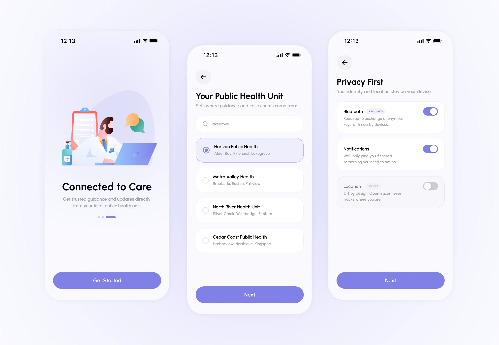

Case Study
Beacon
As quarantine restrictions eased, it became clear that manual monitoring was simply too slow to prevent new waves of infection or effectively "flatten the curve." To address this, we developed Beacon to bridge the gap between technology and public health. By automating the tracing process with privacy-first digital tools, we empower people to protect their communities, expedite recovery, and preserve civil liberties through "privacy by design."
Problem
Understanding
our Goal
Contact tracing is the vital process of identifying and monitoring
individuals exposed to a communicable disease to prevent further
transmission. While traditionally effective, manual tracing is
labor-intensive, time-consuming, and heavily reliant on a
patient's memory. These shortcomings became strikingly evident
during the COVID-19 pandemic, where high infectivity rates in
densely populated areas overwhelmed public health resources.
Our goal was to develop Beacon, a digital contact tracing solution
for Canada. By leveraging smartphone technology to track proximity
interactions, we aimed to address the limitations of physical
tracing through superior speed and scalability, centralizing the
process to make it simpler for both the public and health
officials.
Secondary Market Research
Data-Driven Strategy
To build a product that people would actually use, we conducted
extensive market research into two key areas: global adoption
rates of tracing apps and Canadian government survey data. This
allowed us to identify why certain apps failed and who our primary
users would be.
Research found that older Canadians were actually more likely to
use contact tracing apps than younger demographics, despite
potential technology barriers. The biggest obstacle to adoption
was privacy concerns, particularly fears around government
surveillance and the misuse of sensitive location data. Additional
challenges included poor integration with existing healthcare
systems and a lack of clear, actionable guidance within the apps
themselves.


Technology Feasibility
Privacy-First Proximity Tracking
We investigated several technical modalities to conduct tracing
safely and reliably. While GPS and Bluetooth Low Energy (BLE) were
the industry leaders, they offered very different benefits. GPS
provides excellent location context and helps identifies infection
"hotspots," but it struggles with accuracy near physical barriers
and cannot distinguish between users on different floors of the
same building.
Ultimately, we chose BLE because it can detect short
distances between individuals regardless of elevation or physical
barriers like tunnels and subways. Most importantly, BLE
configures proximity traces without processing or storing
sensitive GPS location data, directly addressing the privacy
concerns raised in our research.

The Apple/Google API
Overcoming OS Limitations
Initially, iOS required apps to stay "awake" in the foreground for
BLE to work. Furthermore, communication between Android and iOS
devices was often inconsistent, leading to missed exposures.
To solve this, Apple and Google partnered to create a unified API.
This framework resolved background processing issues, ensured
compatibility, and set a privacy-first standard while maintaining
technical efficiency.
Competitive Analysis
Identifying Market Gaps
We audited several existing contact tracing apps to understand why their adoption rates remained low. Our analysis confirmed that users gravitated toward apps using BLE technology and those that integrated the Apple/Google API for better security. However, we found a consistent weakness across all competitors: a very shallow level of healthcare integration. Most apps notified the user of exposure but offered no support thereafter, leaving a critical gap in the user journey.

Insights
User Personas
Using insights from our research and story boarding, we defined key user personas to stay aligned with real needs throughout the process. Because the virus affects everyone, we focused especially on the elderly while also considering younger users. This reinforced the need to design a product that is simple, accessible, and easy to use.


Storyboarding
Designing for the Vulnerable
We mapped out user journeys to understand the real-world impact of our product. In our model, Robert doesn't just receive an alert; he is immediately connected to guidance from healthcare professionals. This empathy-led approach reminded us that while the technology is complex, the interface must remain incredibly simple for those on the front lines and those most at risk.

Problem Definition
Bridging the Gap
Through our research, we narrowed our focus to three main problems: privacy fears, technical reliability, and the "notification-only" limitation of current apps. Existing solutions fell short because they only informed users of risk without providing a path to recovery.

User Flow
What's missing from current apps?

Problem Definition
Our Solution
Beacon operates within the secure API framework but adds a vital layer of healthcare integration. By creating a bridge between technology and public health units, we developed a tool that not only notifies users of exposure but also expedites their recovery and helps manage the spread, all while preserving the civil liberties of Canadians.

User Flow
Optimizing the Flow

Iterations & Testing
From Wireframes to High-Fidelity
We began with early wireframes to visualize the user flow and
identify potential pain points. As we moved into visual design, we
focused on professional branding that instilled trust. Through
three rounds of iterations and direct user feedback, we polished
the UI to be accessible for all ages.
We tested the prototype with 12 participants across three critical
tasks: onboarding, uploading a positive diagnosis, and completing
a self-assessment. The completion rate was 100% and the error-free
rate was 91.67%.

Design System
Visual Foundation

Building Trust Immediately
An intuitive onboarding flow that communicates privacy and value from the start. To ensure localized support without compromising anonymity, users provide only their city, safely connecting them to a Public Health Unit without storing personally identifiable data.

The Core Experience
The interface features a clean, three-tab layout: a main dashboard for exposure history and public health advice, a statistics screen tracking local case data and hotspots, and an account page giving users direct control over their account and data.

Intelligent Risk Assessment
A built-in triage self-assessment tool evaluates the specific nature of close contacts. By analyzing the actual level of exposure, the app delivers personalized medical guidance and clear next steps, preventing unnecessary anxiety and healthcare system strain.

Stress-Free Reporting
When a user tests positive, they can quickly report it using a secure verification code from their health unit. Upon entry, the app seamlessly shifts from a tracking tool to a supportive resource hub, providing curated clinical steps and materials to manage their diagnosis.